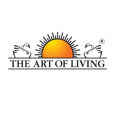

Welcome! In this post I’m going to talk about the Art of Living Organization.

What is the Art of Living
The Art of Living is an organization lead by Sri Sri Ravi Shankar. The motto of Art of Living is to realize that life is a celebration, and the whole world is one family. They give courses teaching a breathing technique called the Sudarshan Kriya and more.
What is the Sudarshan Kriya
The Sudarshan Kriya is a breathing teachnique that benefits you in sveral different ways such as reducing stress and depression, enhance the immune system functonality and also increases mental focus. Several researches have been done about this type of yoga. You can find more about the Sudarshan Kriya in the following link and video.
Art of Living Website
More about them
The Art of Living courses inspires a service ethic. They believe that adding an element of service adds depths to our lives. They also work with several communities such as Disaster & Trauma Relief.
Personal Experience
I regularly practice the YES Sudarshan Kriya, which is a teenager version of the the normal Sudarshan Kriya, and I’ve found that practicing their breathing techniques has improved my mental focus and greatly enhanced my memory. I find these techniques very calming as well.
Contact
To Contact the Art of Living, try the following number and links. Phone Number: +49800000582
Facebook
Instagram
Twitter
That was all! I hope it helped and stay tuned for more…